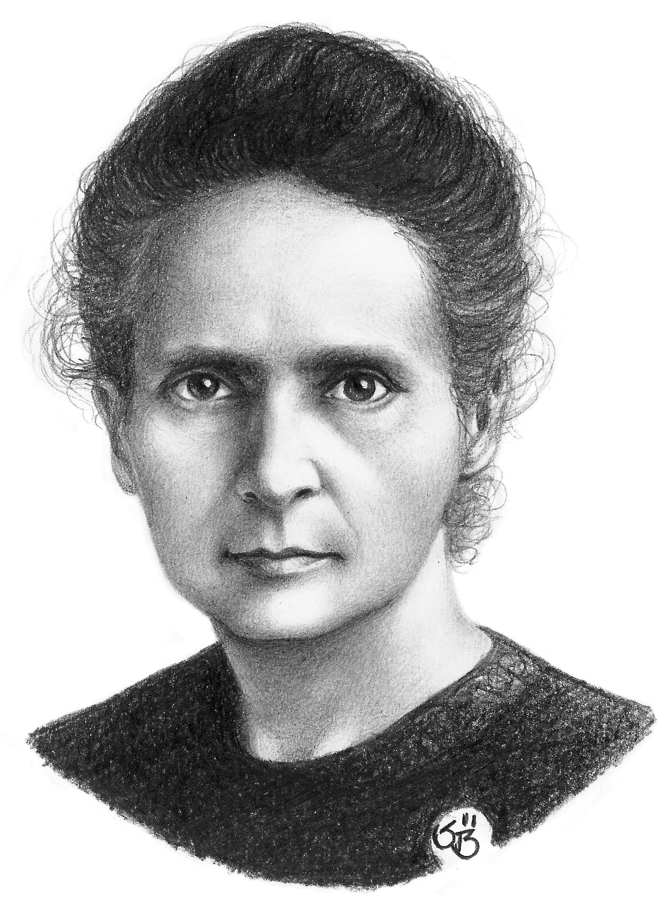
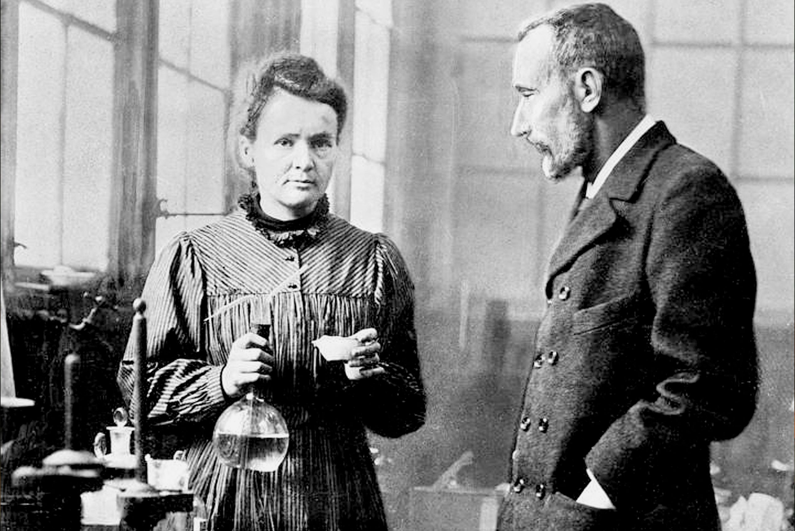

Historia
Marie Curie, nacida como Maria Salomea Skłodowska en Varsovia el 7 de noviembre de 1867, fue una física y química pionera en el estudio de la radiactividad. Junto a su esposo Pierre Curie descubrió los elementos polonio y radio en 1898. En 1903 recibió el Premio Nobel de Física y en 1911 el de Química, convirtiéndose en la primera persona en ganar dos Nobel en distintas disciplinas. Durante la Primera Guerra Mundial impulsó el uso de radiografías móviles para ayudar en el tratamiento de soldados heridos.
Información
- Nombre completo: Maria Salomea Skłodowska
- Nacimiento: 7 de noviembre de 1867, Varsovia
- Fallecimiento: 4 de julio de 1934, Passy, Francia
- Descubrimientos: Polonio y Radio
- Premios: Nobel de Física (1903), Nobel de Química (1911)
- Contribuciones: Investigación en radiactividad y aplicaciones médicas
Ficha técnica
| Nombre | Marie Curie |
|---|---|
| Profesión | Física y Química |
| Educación | Universidad de La Sorbona, París |
| Logros | Descubrimiento de polonio y radio, pionera en radiactividad |
| Premios | Premio Nobel de Física (1903), Premio Nobel de Química (1911) |
Registro de fans
.jpg)

